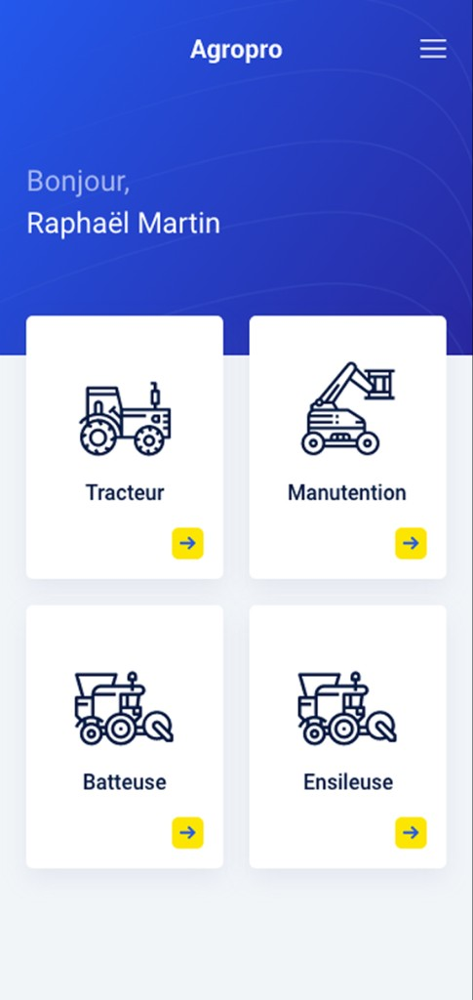
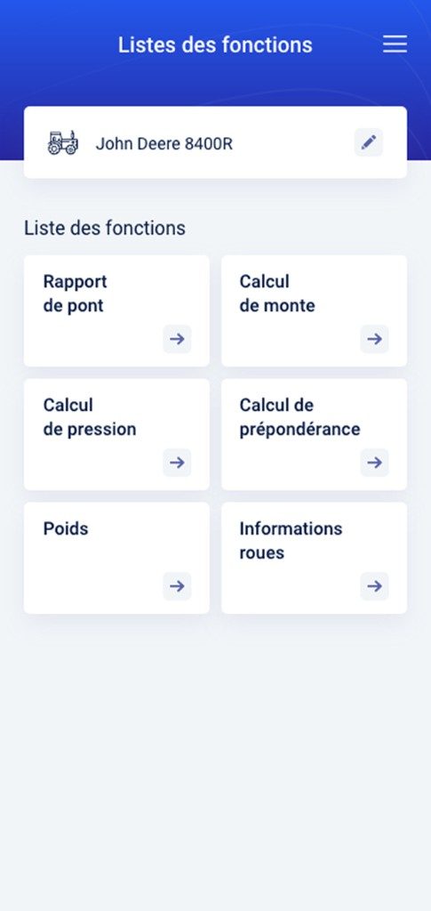
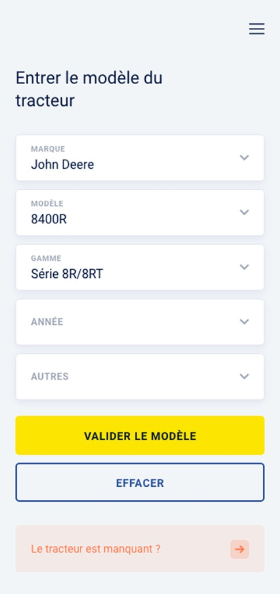

Create a mobile app to replace a legacy Excel like website
Results
+40% speed on main tasks
On the new version of the application
Mobile first
No laptop needed on-site; more professional presence
The company
Michelin has multiple business lines including agricultural tires. Farmers have specific needs and Michelin is trying to give them the best service they can even after buying the tires.
What was the problem?
Michelin Salespeople perform after-sales advice to farmers right on the field. To perform those pieces of advice they use laptops connected to the internet via their phone connection sharing. I made the hypothesis that the new version of their tool should be mobile-first to enhance their work on-site and be seen as more professional by farmers as well as users.
The strategy I implemented
I worked with the product manager to define the different user profiles to work with on this project. After this definition phase, I organised in-person meetings all around France to see firsthand how they were working. I did shadowing followed by interviews with the panel. After this research phase I started designing in an iterative way to obtain the best possible solution for users. Once the User Experience Design was done, we outsourced the development of the website to a company which I had to work with to make sure the website would be as good as possible for users, on mobile as well as on laptops.
Activities
On-site observations, shadowing and interviews allowed me to witness that the devices used by the salespeople were not adapted to their use. Using a smartphone would be much easier for them, and would avoid the need to connect the laptop to a smartphone to have an internet connection.



Challenges
During the Research and ideation phase the product owner was really focused on doing a desktop-based website. I had to push and make him understand that the real life use was not adapted to the environment of the users. The other challenge was a logistical one, scheduling all the shadowing and interviews throughout France with each person’s own schedule.
Solution
Basing the new version on a Mobile-first design resolved problems related to the transport and use of their laptop by eliminating them. The new version of the website is focused on the main tasks users perform, which enabled an improvement both in efficiency and in speed of their main tasks. Once the user experience design was validated I outsourced the user interface design to a freelancet to make the website compliant with Michelin Design System and then to another company for development.
Results and metrics
The new version of the website allowed users to avoid having to carry their laptop all the time to their clients’ appointments. For the website part the new version showed a 30% increase in speed for the main tasks of the application. Finally the main feedback we got is that the farmers, as well as the salespeople, felt that this new tool make them look more professional and more modern than the previous version.
Take-away
This project taught me to do the ideation and research phases with users disseminated all around France, and conduct user testing remotely. Working on a website that is meant to be used in the field rather than in an office has also been really motivating.